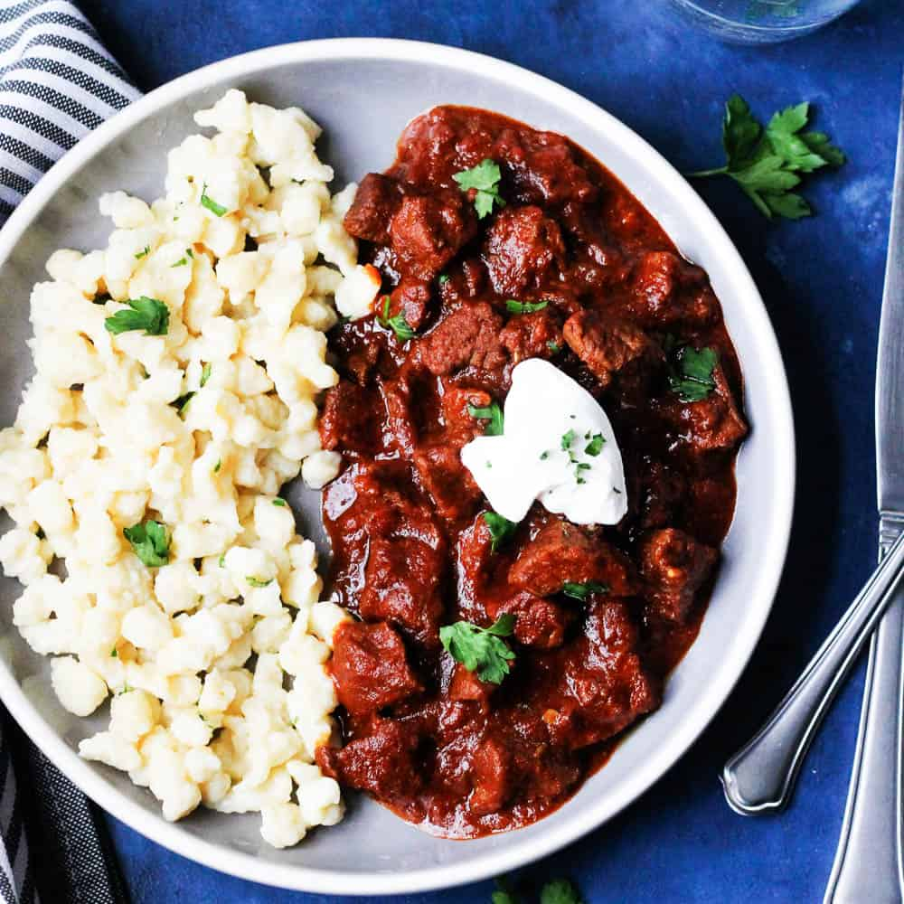
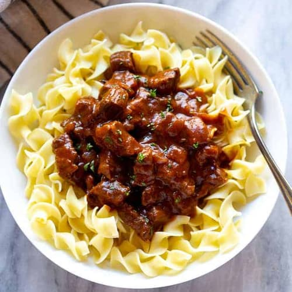
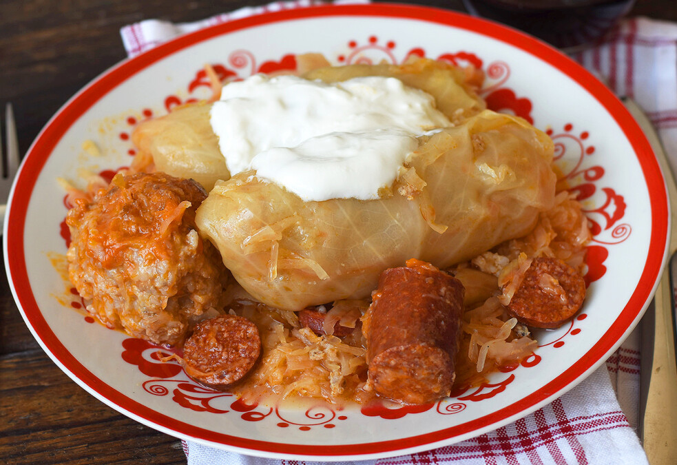
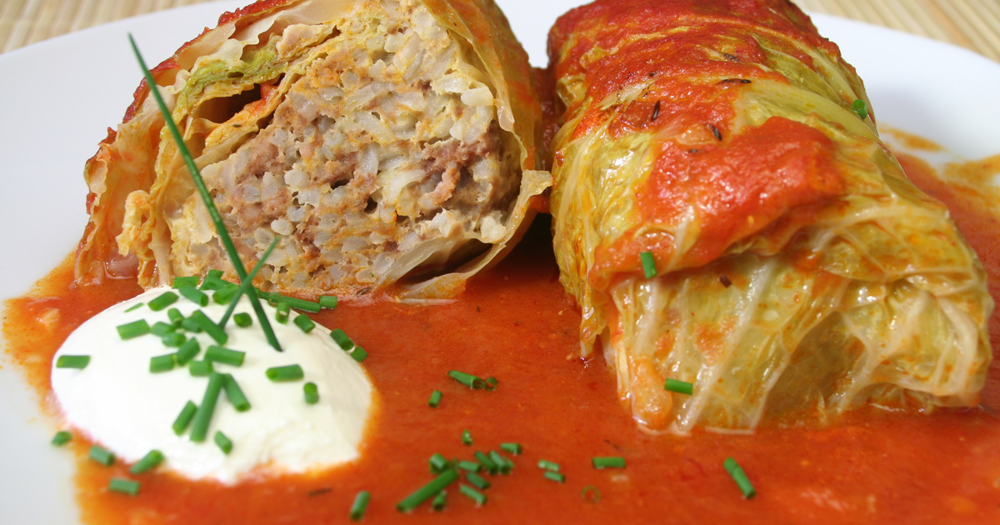
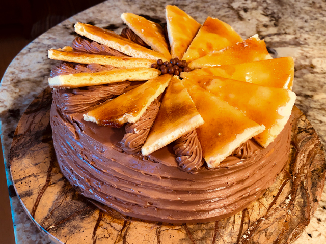
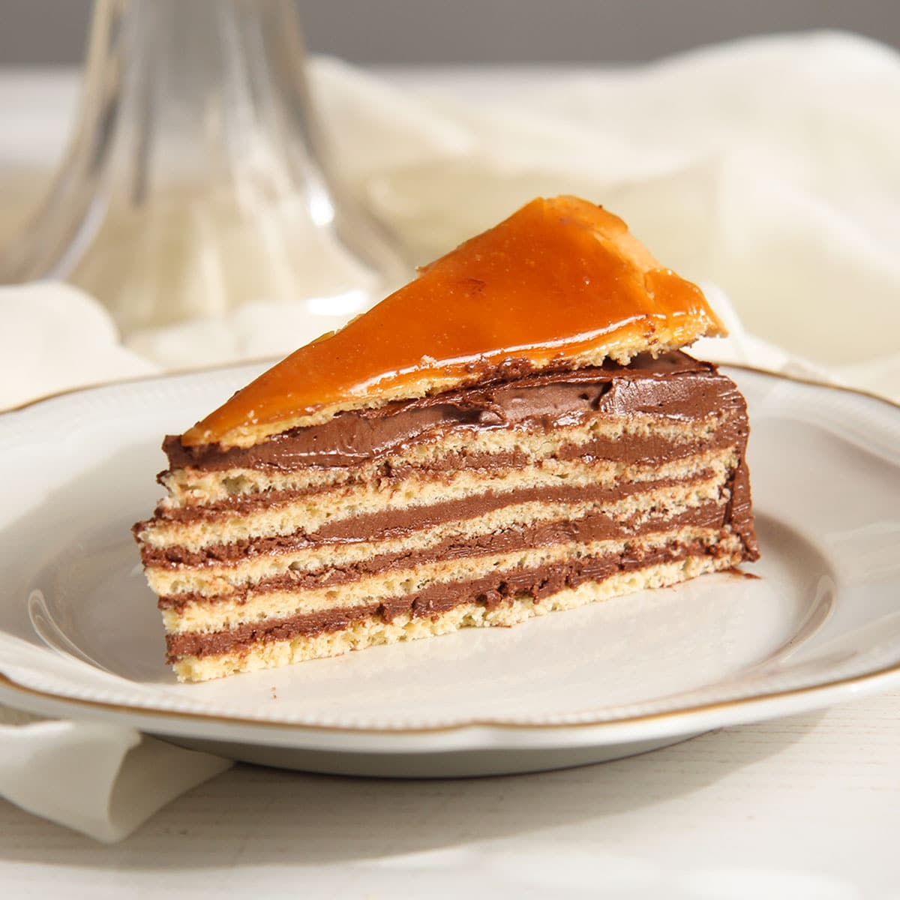
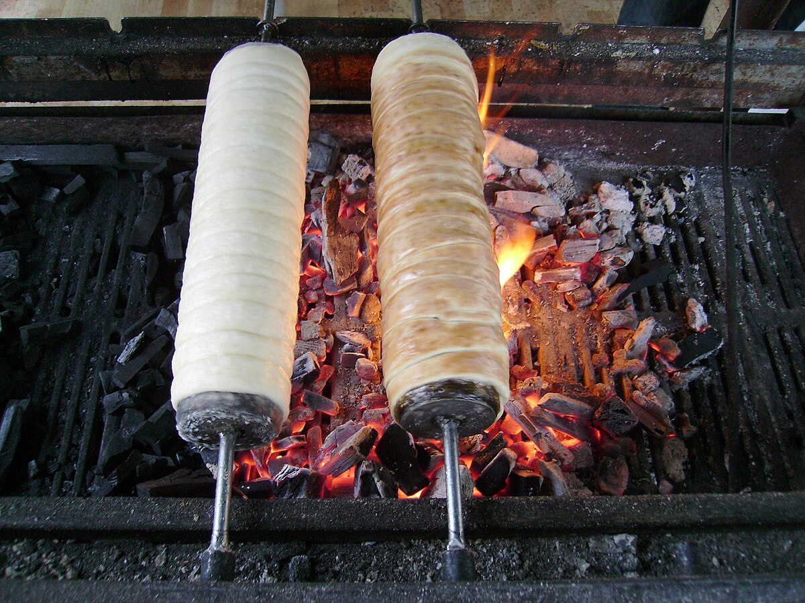
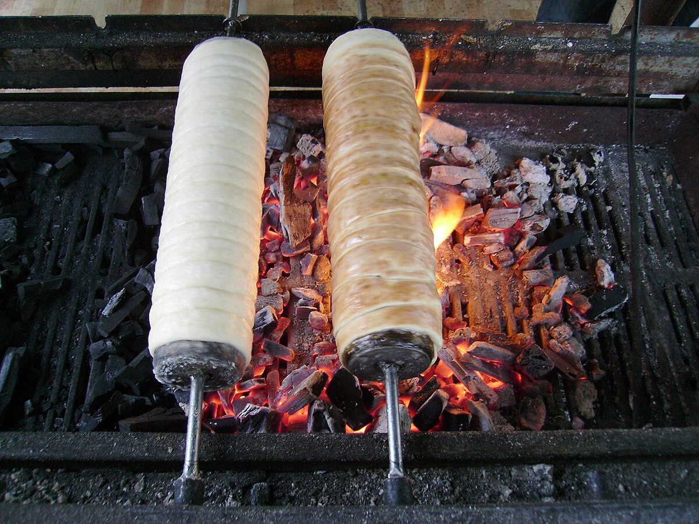
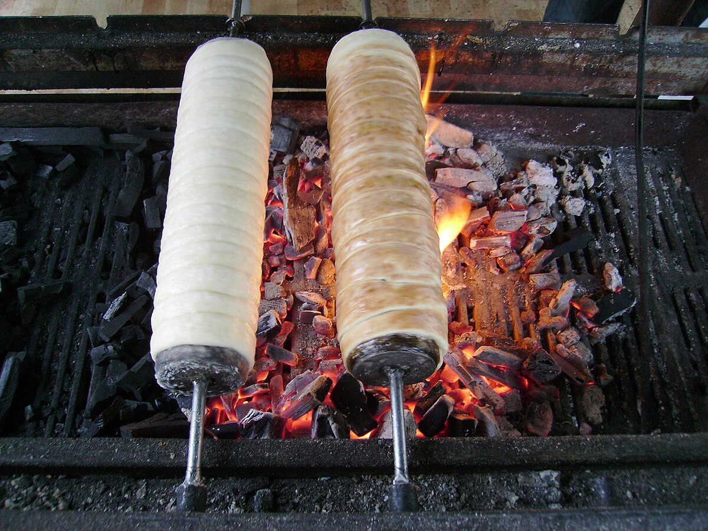

Gulyás, or Hungarian Goulash, is a rich and hearty stew that embodies the spirit of Hungary. Slow-cooked with tender chunks of beef,
onions, paprika, and a medley of vegetables, it delivers a warm, smoky, and slightly spicy flavor that comforts the soul. Traditionally
served with rustic bread or dumplings, each spoonful tells a story of Hungarian pastoral life, family kitchens, and centuries-old
culinary tradition—an essential taste for anyone exploring Hungary.
Pörkölt


Pörkölt is a classic Hungarian stew, rich, comforting, and full of deep flavors. Made with tender meat—often beef, pork, or
chicken—slowly simmered with onions, paprika, and a touch of garlic, it creates a warm, aromatic dish that celebrates Hungary’s
culinary heritage. Traditionally served with nokedli (small dumplings) or rustic bread, every bite is a taste of Hungarian tradition,
family kitchens, and the heart of everyday life.
Lángos
Lángos is a beloved Hungarian street food, golden and crispy on the outside, soft and airy on the inside. This deep-fried flatbread is
often topped with garlic, sour cream, cheese, or even sweet variations like jam, making it a versatile treat for every craving. Enjoyed
at markets, festivals, and local gatherings, Lángos is more than a snack—it’s a flavorful, comforting bite of Hungary’s vibrant food
culture.
Töltött káposzta


Töltött káposzta, or Hungarian stuffed cabbage, is a hearty and aromatic dish that captures the essence of traditional Hungarian home
cooking. Cabbage leaves are lovingly filled with a savory mixture of minced meat, rice, and spices, then slowly simmered in a rich
tomato sauce, sometimes with a touch of smoky paprika. Each bite tells a story of warmth, family, and centuries-old culinary tradition,
making it a must-try for anyone seeking the authentic flavors of Hungary.
Dobos Torte


Dobos Torte is a true jewel of Hungarian confectionery, celebrated for its elegant layers and rich flavors. This iconic cake features
thin sponge layers alternated with creamy chocolate buttercream, crowned with a crisp caramel top that adds a delicate crunch to every
bite. Crafted with precision and artistry, each slice tells a story of Hungarian tradition, skill, and sweet indulgence. A must-try
dessert for anyone wanting to experience the decadent heart of Hungary’s culinary heritage.
Kürtőskalács (Chimney Cake)

Kürtőskalács, or Chimney Cake, is a beloved Hungarian treat that captivates both the eyes and the taste buds. Baked on a rotating spit
over an open flame, its dough forms a golden, cylindrical spiral, perfectly crisp on the outside and tender on the inside. Rolled in
sugar, cinnamon, or nuts, it caramelizes to create a sweet, aromatic crust that melts in your mouth. A festive delight, Kürtőskalács
is more than a pastry—it’s a warm, fragrant experience that invites travelers to savor Hungary’s joyful culinary traditions.


 
